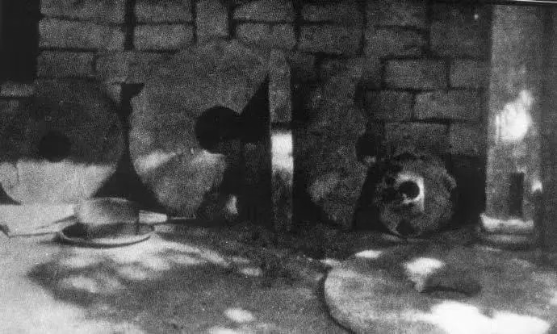
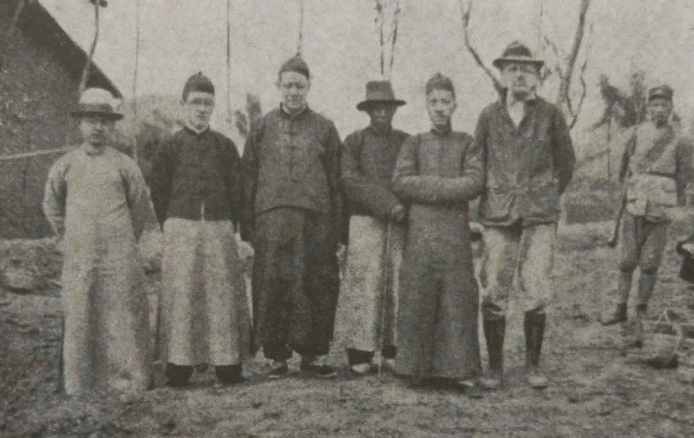
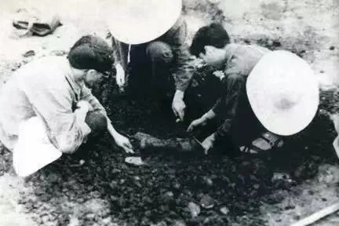
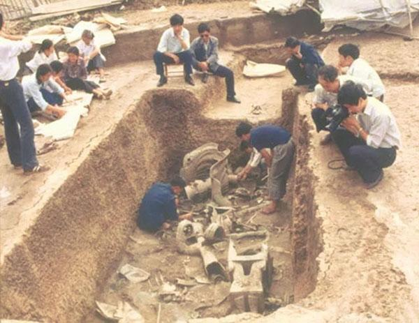
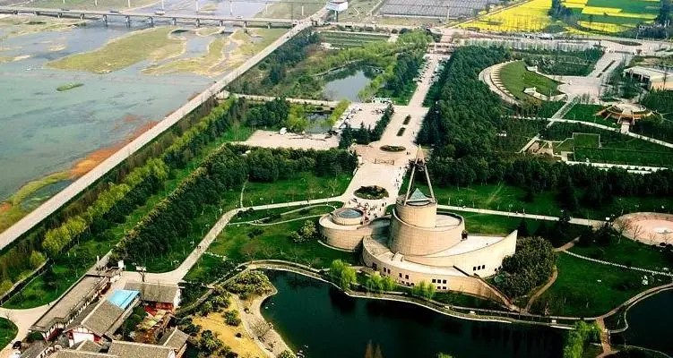
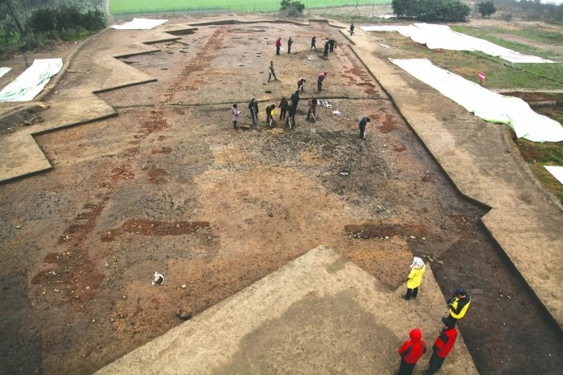
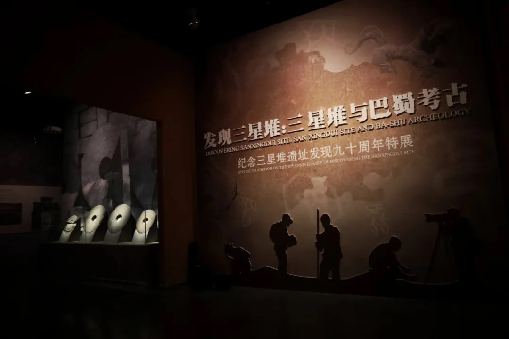
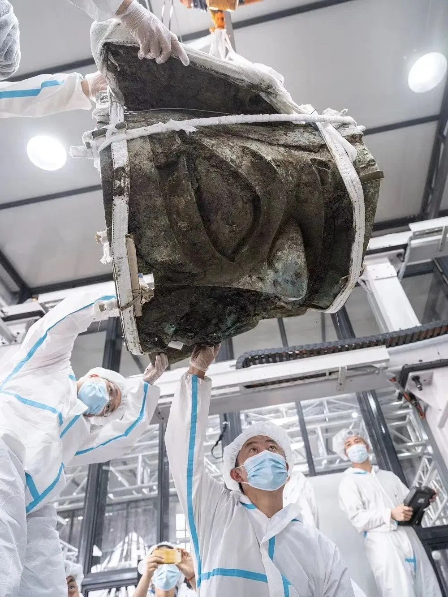
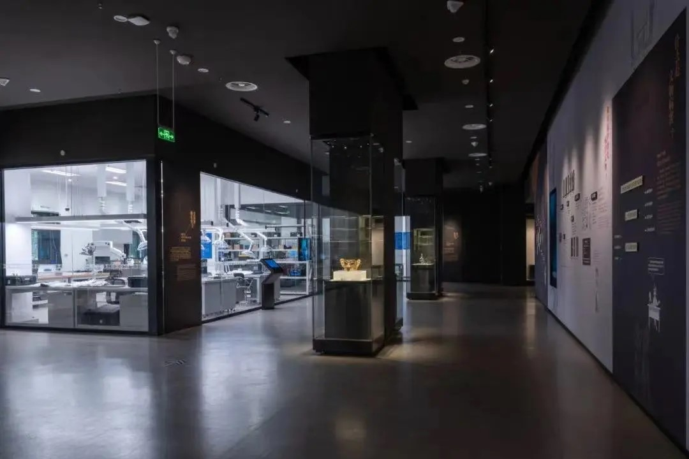

Discover the fascinating history of Sanxingdui excavations, from its accidental discovery to the groundbreaking finds that continue to this day.
A local farmer accidentally discovers jade and stone artifacts while repairing a sewage ditch in Guanghan, Sichuan Province.
David Crockett Graham, an American archaeologist, conducts the first excavation at Sanxingdui, unearthing more than 400 artifacts.
Large-scale excavations begin at Sanxingdui, revealing the first signs of an ancient city.
Two sacrificial pits are discovered, yielding thousands of artifacts including bronze masks, gold scepters, and jade objects.
The Sichuan Provincial Institute of Cultural Relics and Archeology has established the Sanxingdui Site Workstation and the Sanxingdui Museum Preparatory Office.
Ongoing research and smaller excavations continue, providing more insights into the Sanxingdui culture.
New excavation project begins, using advanced archaeological techniques and technology.
Six new sacrificial pits are discovered, yielding over 500 artifacts including gold masks, bronze vessels, and ivory carvings.
Excavations and research continue, with new technologies like 3D scanning and AI helping to unravel the mysteries of Sanxingdui.
As technology advances and new methods of archaeological investigation emerge, the future of Sanxingdui excavations looks bright. Researchers continue to uncover new artifacts and gain insights into this mysterious ancient civilization. The ongoing discoveries at Sanxingdui promise to reshape our understanding of early Chinese history and culture.
Visit our museum to see these incredible artifacts up close and learn more about the ongoing excavations at Sanxingdui!